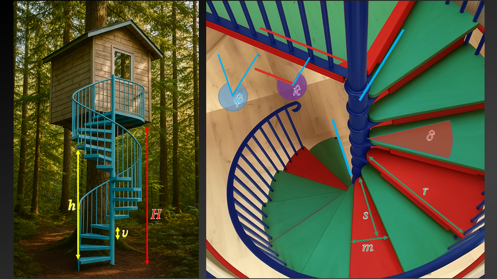

Επιστροφή
Υπολογιστής Σπειροειδούς Σκάλας
Οι παράμετροι απεικονίζονται στις εικόνες και η καταχώρησή τους γίνεται παρακάτω.

Βασικές Διαστάσεις
Είσοδος Δεδομένων
Ύψος σκάλας (H)
Προσεγγιστικό ύψος σκαλοπατιού (υ)
Αποτελέσματα
Πλήθος κατακόρυφων τμημάτων (ρίχτια):
Πραγματικό ύψος σκαλοπατιών (υ):
Πλήθος οριζόντιων τμημάτων (πατήματα):
Λεπτομέρειες Γεωμετρίας
Με βάση το Πάτημα
Με βάση το Ύψος Στροφής
Είσοδος Δεδομένων
Απόσταση από κέντρο κολώνας όπου πατάει ο χρήστης (s)
Μήκος σκαλοπατιού στο σημείο που πατάμε (m)
Γωνία κεφαλόσκαλου (κ°)
Ακτίνα σκάλας (r)
Αποτελέσματα
Γωνία σκαλοπατιού (σ°):
Ύψος από στροφή σε στροφή (h):
Πλήθος στροφών (ακέραιο):
Γωνία σε σχέση με το πάνω μέρος (φ°):
Μήκος σπειρωτής κουπαστής:
Μήκος κουπαστής (1 κύκλος):
Γωνία κλίσης (σε σχέση με το έδαφος):
Είσοδος Δεδομένων
Ύψος από στροφή σε στροφή (hCircle)
Επιλογή Υπολογισμού Πατήματος
Εισαγωγή 's', Υπολογισμός 'm'
Εισαγωγή 'm', Υπολογισμός 's'
Απόσταση από κέντρο κολώνας όπου πατάει ο χρήστης (s)
Μήκος σκαλοπατιού στο σημείο που πατάμε (m)
Γωνία κεφαλόσκαλου (κ°)
Ακτίνα σκάλας (r)
Αποτελέσματα
Ρίχτια ανά στροφή (όχι ακέραιο):
Γωνία σκαλοπατιού (σ°):
Πλήθος στροφών (ακέραιο):
Γωνία σε σχέση με το πάνω μέρος (φ°):
Μήκος σπειροτής κουπαστής:
Μήκος κουπαστής (1 κύκλος):
Γωνία κλίσης (σε σχέση με το έδαφος):
Κώστας Κούδας